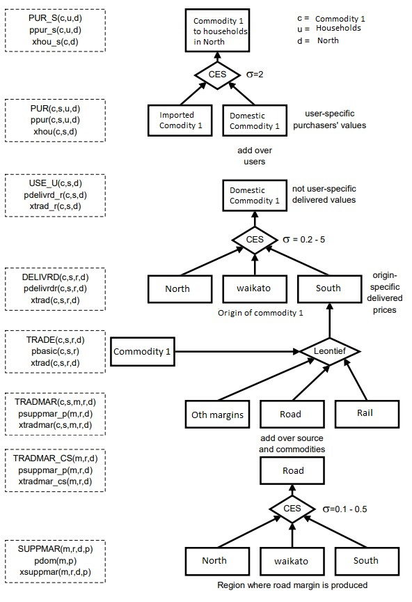

Appendix D – Sourcing mechanism in the PE-CGE model
The following equations and diagram show a series of nests indicating the various substitution possibilities allowed by the PE-CGE model to represent the inter-regional trade structure. We used the trade margin technological change variable to show the impact of improvements in road transport margin on the economy.
Equation (1):
\[\begin{aligned} &XTRADMAR(c,s,m,r,d) = \nonumber \\ & ATRADMAR(c,s,m,r,d)*XTRAD(c,s,r,d) \end{aligned}\]Equation (2):
\[\begin{aligned} &PDELIVRD(c,s,r,d)*XTRAD(c,s,r,d) = \\ & PBASIC(c,s,r)*XTRAD(c,s,r,d)+ \\ & \sum\left(m,MAR, PSUPPMAR_{P(m,r,d)}*XTRADMAR(c,s,m,r,d)\right ) \\ \end{aligned}\]| ATRADMAR(c,s,m,r,d) | Trade for margins technological change |
| XTRAD(c,s,r,d) | Quantity of good c,s from r to d |
| XTRADMAR(c,s,m,r,d) | Margin m on good c,s going from r to d |
| PBASIC(c,s,r) | Basic prices |
| PDELIVRD(c,s,r,d) | All-user delivered price of good c,s from r to d |
| XSUPPMAR_P(m,r,d) | Quantity of composite margin m on goods from r to d |
| PSUPPMAR_P(m,r,d) | Price of composite margin m on goods from r to d |

Source: Horridge and Pearson (2011); Principal Economics